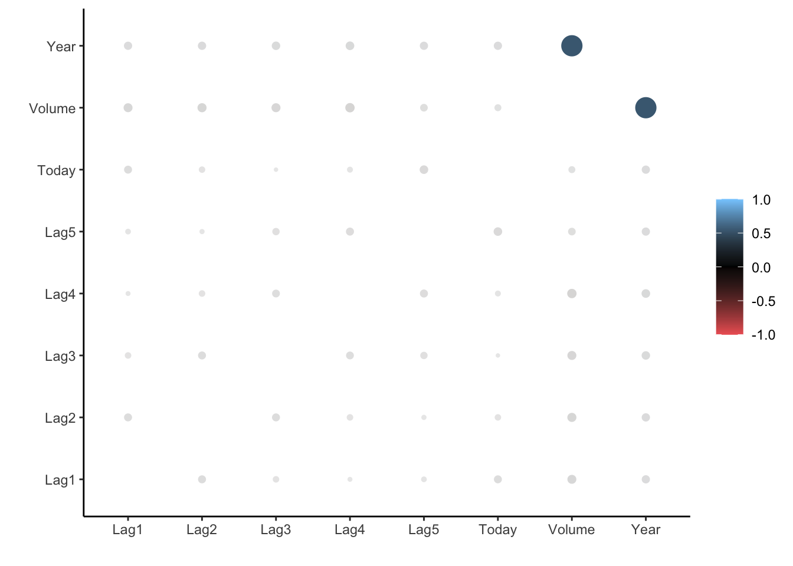
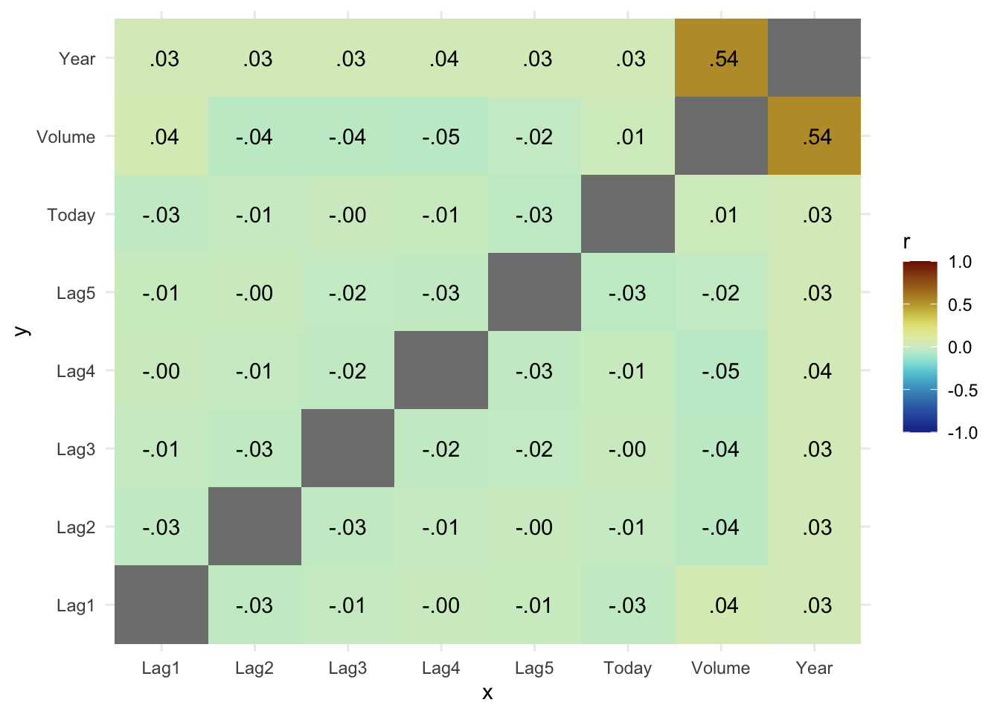

4 Classification
4.1 The Stock Market Data
library(tidymodels)
library(ISLR)
Smarket <- as_tibble(Smarket)##
## Correlation method: 'pearson'
## Missing treated using: 'pairwise.complete.obs'## Don't know how to automatically pick scale for object of type noquote. Defaulting to continuous.
library(paletteer)
cor_Smarket %>%
stretch() %>%
ggplot(aes(x, y, fill = r)) +
geom_tile() +
geom_text(aes(label = as.character(fashion(r)))) +
scale_fill_paletteer_c("scico::roma", limits = c(-1, 1), direction = -1) +
theme_minimal()
4.2 Logistic Regression
lr_spec <- logistic_reg() %>%
set_engine("glm") %>%
set_mode("classification")
lr_fit <- lr_spec %>%
fit(
Direction ~ Lag1 + Lag2 + Lag3 + Lag4 + Lag5 + Volume,
data = Smarket
)
lr_fit## parsnip model object
##
## Fit time: 7ms
##
## Call: stats::glm(formula = Direction ~ Lag1 + Lag2 + Lag3 + Lag4 +
## Lag5 + Volume, family = stats::binomial, data = data)
##
## Coefficients:
## (Intercept) Lag1 Lag2 Lag3 Lag4 Lag5
## -0.126000 -0.073074 -0.042301 0.011085 0.009359 0.010313
## Volume
## 0.135441
##
## Degrees of Freedom: 1249 Total (i.e. Null); 1243 Residual
## Null Deviance: 1731
## Residual Deviance: 1728 AIC: 1742
summary(lr_fit$fit)##
## Call:
## stats::glm(formula = Direction ~ Lag1 + Lag2 + Lag3 + Lag4 +
## Lag5 + Volume, family = stats::binomial, data = data)
##
## Deviance Residuals:
## Min 1Q Median 3Q Max
## -1.446 -1.203 1.065 1.145 1.326
##
## Coefficients:
## Estimate Std. Error z value Pr(>|z|)
## (Intercept) -0.126000 0.240736 -0.523 0.601
## Lag1 -0.073074 0.050167 -1.457 0.145
## Lag2 -0.042301 0.050086 -0.845 0.398
## Lag3 0.011085 0.049939 0.222 0.824
## Lag4 0.009359 0.049974 0.187 0.851
## Lag5 0.010313 0.049511 0.208 0.835
## Volume 0.135441 0.158360 0.855 0.392
##
## (Dispersion parameter for binomial family taken to be 1)
##
## Null deviance: 1731.2 on 1249 degrees of freedom
## Residual deviance: 1727.6 on 1243 degrees of freedom
## AIC: 1741.6
##
## Number of Fisher Scoring iterations: 3
tidy(lr_fit)## # A tibble: 7 x 5
## term estimate std.error statistic p.value
## <chr> <dbl> <dbl> <dbl> <dbl>
## 1 (Intercept) -0.126 0.241 -0.523 0.601
## 2 Lag1 -0.0731 0.0502 -1.46 0.145
## 3 Lag2 -0.0423 0.0501 -0.845 0.398
## 4 Lag3 0.0111 0.0499 0.222 0.824
## 5 Lag4 0.00936 0.0500 0.187 0.851
## 6 Lag5 0.0103 0.0495 0.208 0.835
## 7 Volume 0.135 0.158 0.855 0.392
predict(lr_fit, new_data = Smarket)## # A tibble: 1,250 x 1
## .pred_class
## <fct>
## 1 Up
## 2 Down
## 3 Down
## 4 Up
## 5 Up
## 6 Up
## 7 Down
## 8 Up
## 9 Up
## 10 Down
## # … with 1,240 more rows
predict(lr_fit, new_data = Smarket, type = "prob")## # A tibble: 1,250 x 2
## .pred_Down .pred_Up
## <dbl> <dbl>
## 1 0.493 0.507
## 2 0.519 0.481
## 3 0.519 0.481
## 4 0.485 0.515
## 5 0.489 0.511
## 6 0.493 0.507
## 7 0.507 0.493
## 8 0.491 0.509
## 9 0.482 0.518
## 10 0.511 0.489
## # … with 1,240 more rows
augment(lr_fit, new_data = Smarket) %>%
conf_mat(truth = Direction, estimate = .pred_class)## Truth
## Prediction Down Up
## Down 145 141
## Up 457 507
augment(lr_fit, new_data = Smarket) %>%
conf_mat(truth = Direction, estimate = .pred_class) %>%
autoplot(type = "heatmap")
augment(lr_fit, new_data = Smarket) %>%
accuracy(truth = Direction, estimate = .pred_class)## # A tibble: 1 x 3
## .metric .estimator .estimate
## <chr> <chr> <dbl>
## 1 accuracy binary 0.5224.3 Linear Discriminant Analysis
##
## Attaching package: 'discrim'## The following object is masked from 'package:dials':
##
## smoothness
lda_spec <- discrim_linear() %>%
set_engine("MASS")
lda_fit <- lda_spec %>%
fit(Direction ~ Lag1 + Lag2, data = Smarket)
lda_fit## parsnip model object
##
## Fit time: 5ms
## Call:
## lda(Direction ~ Lag1 + Lag2, data = data)
##
## Prior probabilities of groups:
## Down Up
## 0.4816 0.5184
##
## Group means:
## Lag1 Lag2
## Down 0.05068605 0.03229734
## Up -0.03969136 -0.02244444
##
## Coefficients of linear discriminants:
## LD1
## Lag1 -0.7567605
## Lag2 -0.4707872